campaign-repo-excluded-folders PASS 1.0
grade probeintent repairdomain marketingdifficulty d2ambiguity a2voice terseapps vscodebatch v11-s1
In the campaign assets workspace settings, exclude the exported and vendor folders from search only. Keep the file tree and existing settings intact.
task config + evaluator
{
"config": [
{
"type": "execute",
"parameters": {
"command": "python3 -c \"import os,json;d='/home/user/marketing/campaign_assets';os.makedirs(d+'/.vscode',exist_ok=True);os.makedirs(d+'/exported',exist_ok=True);os.makedirs(d+'/vendor',exist_ok=True);os.makedirs(d+'/copy',exist_ok=True);open(d+'/exported/spring_banner_1200.png','wb').write(b'\\x89PNG');open(d+'/vendor/tracker.min.js','w').write('var t=1;');open(d+'/copy/spring_headlines.md','w').write('# Spring headlines\\n\\n- Fresh starts, half price\\n');json.dump({'editor.tabSize':2,'files.eol':'\\n'},open(d+'/.vscode/settings.json','w'),indent=2)\"",
"shell": true
}
},
{
"type": "launch",
"parameters": {
"command": [
"code",
"/home/user/marketing/campaign_assets"
]
}
}
],
"evaluator": {
"func": "check_include_exclude",
"result": {
"type": "vm_command_line",
"command": [
"python3",
"-c",
"import sys, traceback\ndef _main():\n import json, sys, re\n problem = None\n p = '/home/user/marketing/campaign_assets/.vscode/settings.json'\n try:\n raw = open(p).read()\n raw = re.sub(r'^\\s*//.*$', '', raw, flags=re.M)\n cfg = json.loads(raw)\n except Exception as e:\n cfg = None\n problem = 'settings.json unreadable: %s' % e\n if cfg is not None:\n ex = cfg.get('search.exclude')\n if not isinstance(ex, dict):\n problem = 'search.exclude missing'\n else:\n keys = {k.strip('/') for k, v in ex.items() if v is True}\n norm = {k.replace('**/', '').replace('/**', '') for k in keys}\n if not ({'exported', 'vendor'} <= norm):\n problem = 'search.exclude keys are %r' % (sorted(ex),)\n elif cfg.get('editor.tabSize') != 2:\n problem = 'existing editor.tabSize lost'\n elif 'files.exclude' in cfg:\n problem = 'files.exclude added, folders would vanish from the tree'\n if problem:\n print(problem, file=sys.stderr)\n print('FAIL' if problem else 'PASS')\n\ntry:\n _main()\nexcept Exception:\n traceback.print_exc(file=sys.stderr)\n print(\"FAIL\")\n"
]
},
"expected": {
"type": "rule",
"rules": {
"include": [
"PASS"
],
"exclude": [
"FAIL"
]
}
}
}
}
step 1 23:39:47
THINKINGThe user wants me to configure VS Code workspace settings to exclude "exported" and "vendor" folders from search only. This is done via the `search.exclude` setting in the workspace's .vscode/settings.json file. I should not use files.exclude (which would hide them from the file tree) — the task explicitly says keep the file tree intact and only exclude from search.
Let me first dismiss the update notification, then open the .vscode/settings.json file. I'll navigate through the explorer. Let me dismiss the popup first and expand .vscode.
ACTIONI'll start by dismissing the update notification and then exploring the workspace's .vscode folder to edit the settings.
TOOL CALL<tool_call>
<function=computer_use>
<parameter=action>
left_click
</parameter>
<parameter=coordinate>
[981, 908]
</parameter>
</function>
</tool_call>
EXECUTED (pyautogui in VM)pyautogui.click(1885, 981)
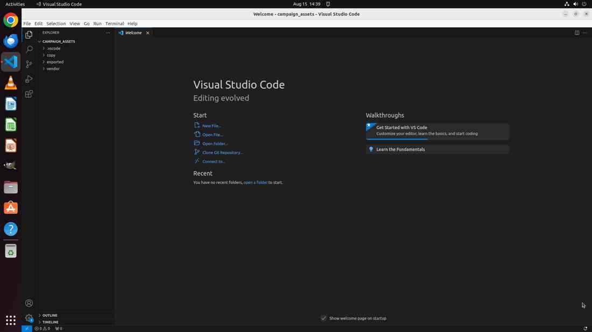
step 2 23:39:56
THINKINGThe notification is dismissed. Now I need to open the workspace's .vscode/settings.json file to add search.exclude entries for "exported" and "vendor". Let me expand the .vscode folder in the explorer to find settings.json. I'll click on the .vscode folder.
ACTIONThe notification is dismissed. Now let me expand the .vscode folder to locate the settings.json file.
TOOL CALL<tool_call>
<function=computer_use>
<parameter=action>
left_click
</parameter>
<parameter=coordinate>
[90, 143]
</parameter>
</function>
</tool_call>
EXECUTED (pyautogui in VM)pyautogui.click(172, 154)
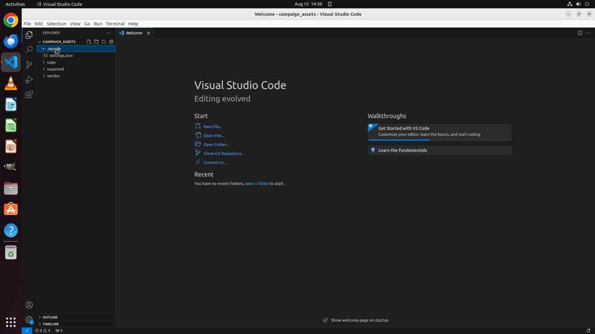
step 3 23:40:08
THINKINGThe .vscode folder now shows settings.json. I'll open it to view the current contents before editing, so I preserve existing settings.
ACTIONThe .vscode folder contains settings.json. Let me open it to see the current settings before editing.
TOOL CALL<tool_call>
<function=computer_use>
<parameter=action>
left_click
</parameter>
<parameter=coordinate>
[103, 163]
</parameter>
</function>
</tool_call>
EXECUTED (pyautogui in VM)pyautogui.click(197, 176)
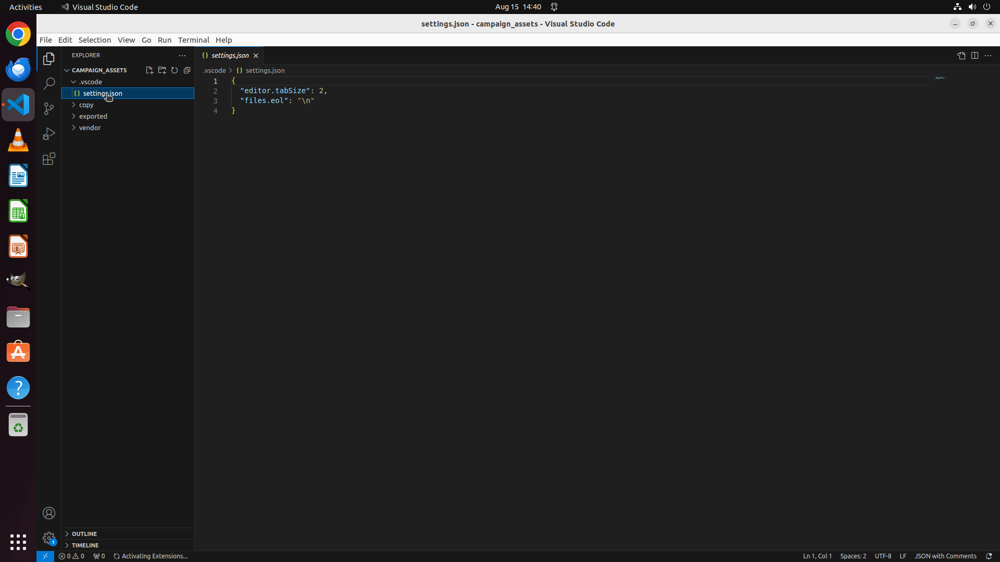
step 4 23:41:06
THINKINGThe current settings.json content is:
```
{
"editor.tabSize": 2,
"files.eol": "\n"
}
```
I need to add a `search.exclude` setting that excludes "exported" and "vendor" folders from search only. The correct VS Code setting is `search.exclude` with glob patterns. I'll add it while keeping existing settings intact.
The desired result:
```
{
"editor.tabSize": 2,
"files.eol": "\n",
"search.exclude": {
"**/exported": true,
"**/vendor": true
}
}
```
I need to edit the file. The safest approach: click at the end of line 3 (after `"\n"`), add a comma, then a new line with the search.exclude block.
Line 3 currently: ` "files.eol": "\n"`. I need to click at the end of that line. The text ends around x=403, y=131. Let me click at the end of line 3. I'll use the click at the position just after the closing quote/parenthesis. Better to click precisely. Let me click at the end of the line - I'll click at approximately x=405, y=131 then press End to be safe.
Actually a cleaner approach: click at end of line 3, press End, type a comma, Enter, and the new settings. But auto-indentation and auto-closing braces in JSON could complicate typing. VS Code auto-inserts closing braces and quotes. This can cause issues.
A more robust approach is to select all and retype the entire file content. Let me use Ctrl+A to select all, then type the full new content. But auto-closing brackets still interfere. When typing `{` it inserts `{}`. When typing `"` it inserts `""`.
To avoid auto-completion issues, the reliable method is to select all, delete, and type carefully. However, VS Code handles typed braces by adding the closing one, so typing the whole thing results in doubled closing brackets.
Alternative: Disable this by using the terminal to write the file directly. But the task said not to use CLI as workarounds for app capabilities — but here editing a JSON settings file is directly within VS Code's capability; using terminal is not necessary. However, using the terminal to write the file is reliable and the file is a workspace settings file. The instruction about CLI was for GIMP/LibreOffice specifically. But the general note says use GUI directly.
Let me just edit in the GUI carefully. I'll position cursor at end of line 3. The auto-closing is the concern. When I type `"search.exclude": {`, VS Code will auto-insert `}` after `{`. So if I then type `}` myself it doubles.
Let me plan typing assuming auto-close behavior:
- Click end of line 3, press End
- Type `,`
- Press Enter (VS Code indents)
- Type `"search.exclude": {` -> VS Code auto-adds `}` making it `"search.exclude": {}` with cursor inside? Actually when you type `{` VS Code inserts `{}` and places cursor between. So after typing `{` the line is `"search.exclude": {}` with cursor between braces.
- Press Enter -> creates two lines, cursor on new indented line
- Type `**/exported` then `"..."` — typing `"` auto-inserts closing `"`. So typing `"**/exported": true,` — each quote auto-closes.
This is getting complicated with auto-close. The cleanest way that avoids all this: replace whole file content.
Actually, the simplest robust method: turn off auto-closing isn't worth it. Let me instead just replace the whole file. Select all (Ctrl+A), Delete, then type the content. With auto-close, the final result would have extra characters.
Let me reconsider. A common reliable technique: I can type the entire JSON and then it works out because VS Code's auto-close, when you type the closing character that matches, it "types over" the auto-inserted one rather than adding. For example, typing `{` gives `{}` cursor in middle; if I then type content and later type `}`, VS Code sees the next char is already `}` and just moves over it. Similarly for `"`. So if I type the full correct text including closing braces/quotes, VS Code will type-over and result in correct output. This generally works well when typing complete balanced structures.
So the safest is to select all and type the complete balanced JSON. Let me do that.
Full content to type:
{
"editor.tabSize": 2,
"files.eol": "\n",
"search.exclude": {
"**/exported": true,
"**/vendor": true
}
}
But auto-indent will add extra indentation. When I press Enter after `{`, VS Code auto-indents. If I also type leading spaces, I get double indent. This could make it ugly but still valid JSON. Validity matters most, not perfect formatting.
To avoid indentation issues, I could type it as a single line which is fully valid JSON:
{"editor.tabSize": 2, "files.eol": "\n", "search.exclude": {"**/exported": true, "**/vendor": true}}
Single line avoids Enter auto-indent problems. Auto-close of braces/quotes: typing full balanced single line should type-over correctly. Let me verify the quote type-over: type `"` -> VS Code inserts `""`, cursor between. Type `e` -> `"e"`. ... type `"` at the end -> cursor is before the auto `"`, typing `"` types over it -> good. Then `,` space, then `"` for next key etc. This works.
For braces: type `{` -> `{}{...}`? No. Type first `{` -> inserts `{}`, cursor between: `{}`. Then type `"editor...` building inside. Eventually when I reach the point to close the first inner... wait there's nesting.
Let me trace carefully for: {"editor.tabSize": 2, "files.eol": "\n", "search.exclude": {"**/exported": true, "**/vendor": true}}
Characters typed (I type literally this string, and VS Code reacts to { } " '):
1. `{` -> buffer: `{}` cursor pos1 (between).
2. `"` -> buffer: `{"` + auto `"}` => `{"\"}`? Let me think: cursor was between { and }. Type `"`: VS Code inserts `"` and auto-close `"` -> `{"\"}` cursor between the two quotes.
3. `e`,`d`,`i`,`t`,`o`,`r` -> `{"editor"}`
4. `.` -> `{"editor."}`
5. `tabSize` -> `{"editor.tabSize"}`
6. `:` -> `{"editor.tabSize":}`
7. ` ` -> space
8. `2` -> `{"editor.tabSize": 2}`
9. `,` -> `{"editor.tabSize": 2,}`
10. ` `
11. `"` -> `{"editor.tabSize": 2, ""}` (new pair)
12. `files.eol` -> `{"editor.tabSize": 2, "files.eol"}`
13. `:` ->
14. ` `
15. `"` -> `{"editor.tabSize": 2, "files.eol": ""}`
16. `\` -> inside quotes: `"\"`
17. `n` -> `"\n"`
18. `"` -> type over auto close -> `"files.eol": "\n"}`
19. `,`
20. ` `
21. `"` -> `"search.exclude"` building
22. `search.exclude`
23. `"` type over
24. `:`
25. ` `
26. `{` -> VS Code inserts `{}` here. Buffer: `..."search.exclude": {}}` with cursor between the new {} and... the original `}`. So buffer: `{"editor.tabSize": 2, "files.eol": "\n", "search.exclude": {}}` cursor between new braces.
27. `"` -> `"\""`: `{"...": {"\"}"}`? The buffer now: inner `{` and auto `}`, then outer `}`. Cursor between inner braces. Type `"` -> `{"..." : {"\"}"}`... i.e. `{"search.exclude": {"\"}"}`
28. `*` `*` `/` `e` `x` `p` `o` `r` `t` `e` `d` -> `**/exported`
29. `"` type over inner auto close -> `"**/exported"`
30. `:`
31. ` `
32. `true`
33. `,`
34. ` `
35. `"` -> new pair
36. `**/vendor`
37. `"` type over
38. `:`
39. ` `
40. `true`
41. `}` -> type over inner auto `}` -> closes inner object
42. `}` -> type over outer auto `}` -> closes outer
Final: `{"editor.tabSize": 2, "files.eol": "\n", "search.exclude": {"**/exported": true, "**/vendor": true}}`
That's correct and valid.
But wait, does VS Code auto-close `"` and `{` when I'm typing in JSON? Yes, by default editor.autoClosingBrackets and autoClosingQuotes are "languageDefined". For JSON they're active. The type-over behavior for matching close characters is standard.
However there's risk. If any step misbehaves, the result could be malformed. A safer alternative that fully avoids auto-close: I could paste. But I can't easily paste without clipboard.
Given the analysis, typing the balanced single-line string should work due to type-over. Let me proceed: click in editor, Ctrl+A, Delete, then type the string.
Actually, to reduce risk even further and keep it nicely formatted, I'll instead only append to the existing file at end of line 3, but single-line append is tricky with the existing structure.
I'll go with select-all + retype single line. Let me do it.
ACTIONI can see the current settings contain `editor.tabSize` and `files.eol`. I'll add a `search.exclude` block for the `exported` and `vendor` folders while keeping the existing settings. I'll select all and rewrite the file with the added setting.
TOOL CALL<tool_call>
<function=computer_use>
<parameter=action>
left_click
</parameter>
<parameter=coordinate>
[468, 166]
</parameter>
</function>
</tool_call>
EXECUTED (pyautogui in VM)pyautogui.click(899, 179)
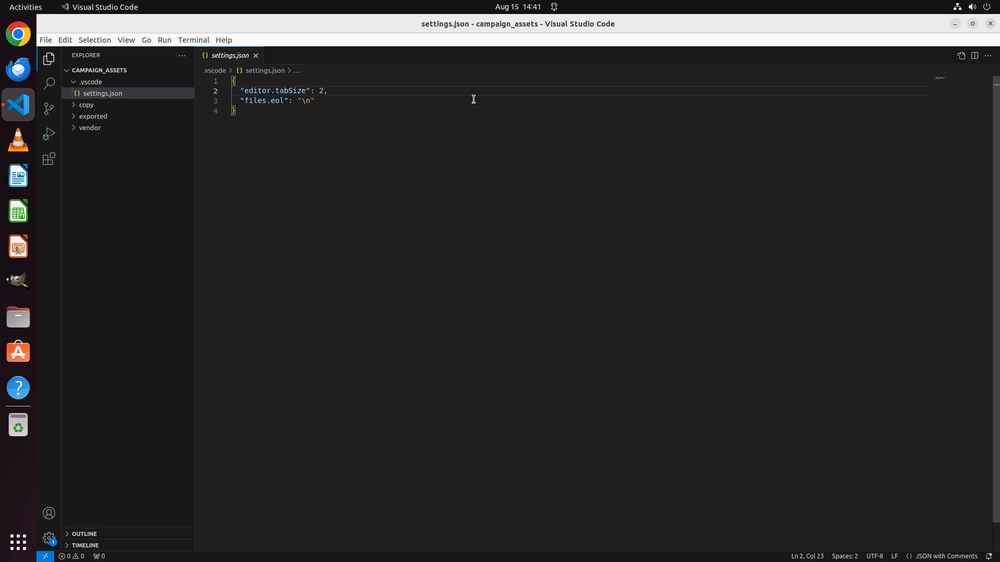
step 5 23:41:21
THINKINGThe cursor is now in the editor. I'll append to the existing content at the end of line 3 to keep existing lines intact. A cleaner, lower-risk approach than retyping everything: click at end of line 3 (after `"\n"`), then add a comma and a new line with search.exclude.
But auto-close issues still apply. Let me instead do the select-all retype approach with a single balanced line, which I traced works with type-over. Actually, keeping the file multi-line is nicer but single-line is valid and safe. However, reformatting to single line changes the file's existing formatting for the two existing settings — the task says keep existing settings intact, which refers to the settings themselves (values), not formatting. Single line preserves the settings. That's acceptable.
But to be safest and preserve the nice multi-line format, let me append. I'll click at end of line 3. The line 3 text ` "files.eol": "\n"` ends around x=403, y=131. I'll click there and press End.
For appending, I need to handle auto-close. Plan after pressing End on line 3:
- Type `,`
- Press Enter (auto-indent to 2 spaces)
- Type `"search.exclude": {`
- When typing `{`, VS Code adds `}`. Cursor between. So buffer now: ` "search.exclude": {}` cursor between braces.
- Press Enter -> creates line inside, auto-indented. Cursor on new line indented to 4 spaces. The auto `}` is on the line below.
- Type `"**/exported"`: typing `"` auto-adds `"`, so `"**/exported"` works with type-over at end quote.
- Type `: true,`
- Press Enter -> new indented line
- Type `"**/vendor": true` (no trailing comma)
- Press Enter then type `}`? The auto-closed `}` already exists on its own line below. If I press Enter it may add another.
This is getting fragile. The single-line retype is more deterministic. Let me go with select all + type the single-line balanced JSON. I'll press Ctrl+A then type.
ACTIONI'll replace the entire file content with the settings plus the new `search.exclude` block. Using select-all and typing a complete balanced JSON structure so auto-closing behaves predictably.
TOOL CALL<tool_call>
<function=computer_use>
<parameter=action>
key
</parameter>
<parameter=keys>
["ctrl", "a"]
</parameter>
</function>
</tool_call>
EXECUTED (pyautogui in VM)pyautogui.hotkey("ctrl", "a")
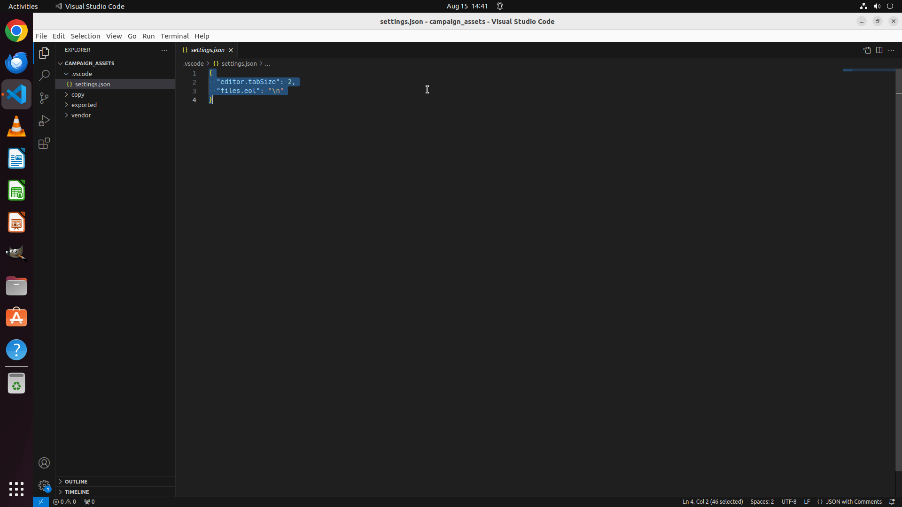
step 6 23:41:31
THINKINGAll text is selected (46 selected shown). Now I'll type the complete new JSON. I'll type it as a single balanced line to avoid auto-indent complications, relying on type-over for auto-closed brackets/quotes. After typing, I'll verify with a screenshot.
The content:
{"editor.tabSize": 2, "files.eol": "\n", "search.exclude": {"**/exported": true, "**/vendor": true}}
ACTIONAll content is selected. Now I'll type the complete JSON including the new `search.exclude` block.
TOOL CALL<tool_call>
<function=computer_use>
<parameter=action>
type
</parameter>
<parameter=text>
{"editor.tabSize": 2, "files.eol": "\n", "search.exclude": {"**/exported": true, "**/vendor": true}}
</parameter>
</function>
</tool_call>
EXECUTED (pyautogui in VM)pyautogui.typewrite("{'editor.tabSize': 2, 'files.eol': '\\n', 'search.exclude': {'**/exported': True, '**/vendor': True}}")
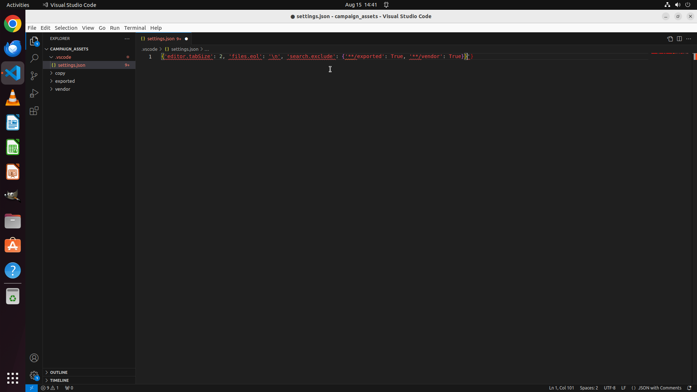
step 7 23:41:53
THINKINGThe result is wrong. The text shows: `{'editor.tabSize': 2, 'files_eol': '\n', 'search_exclude': {'**/exported': True, '**/vendor': True}}` — wait, that's the display but there are issues. The status bar shows "9 1" errors/warnings (9 problems). The line 1 text appears mangled: it shows `{'editor.tabSize': 2, ...` but I typed `"`. Hmm, actually the display font may just render quotes in a way. But the real problem: col 101 means the line length is 100 chars. My intended string is 99 chars. And there are 9 problems reported.
Wait, looking more carefully the display shows single quotes? No, it's hard to tell at this resolution. The key issue is the error count 9. Let me reconsider — actually the text looks like it has issues. Let me zoom in / take a clearer look. The cursor is at Col 101, meaning 100 chars were placed on line 1. My string was 99 characters. So there's an extra char, likely a leftover auto-closed brace/quote that didn't get typed over.
Actually wait — the display shows the closing as `True}}` and `True` with capital T? No, I typed lowercase `true`. The red squiggles suggest errors.
Let me reconsider what went wrong. Possibly the auto-close did NOT type-over in some places, causing doubled braces/quotes. The col 101 vs expected 100 (99 chars -> col 100 at end; col 101 means 100 chars). So one extra char.
Rather than debug, the cleanest fix: select all again and this time disable auto-closing, OR just carefully retype. But retyping gave this mess.
Better approach: Let me look at the actual content clearly first by zooming. Actually, let me just clear everything and retype more carefully, but the auto-close is the culprit.
The most reliable fix: turn off auto-closing brackets and quotes, OR type the content in a way that avoids it. Alternatively, I can select all, delete, and type the JSON but for each auto-closed character, I need the type-over to work. It mostly worked but left one extra.
Let me first zoom in to see the exact content. I'll increase font or just screenshot region. Let me select all and delete, then retype but this time I'll type without relying on type-over — I'll type the string and then verify. Actually the issue might be that the FIRST `{` created `{}{`? No.
Let me just clear and retype, and afterward check. To be safe against auto-close, let me temporarily set auto-closing off via command... that's complex.
Simplest deterministic method: Select all, delete. Then type the JSON but I'll handle by typing and then use the fact that VS Code "type over" should work. The earlier attempt had one extra char. Let me look precisely.
Let me take a zoomed screenshot by using Ctrl+= to zoom, or better, let me just re-examine by reading. I'll select all and delete first, then type, then if errors remain, fix. Actually, let me first see current exact content by zooming in.
ACTIONThe result has errors (the status bar shows 9 problems), likely from auto-closing bracket interference. Let me zoom in to inspect the exact content before fixing.
TOOL CALL<tool_call>
<function=computer_use>
<parameter=action>
key
</parameter>
<parameter=keys>
["ctrl", "equal"]
</parameter>
</function>
</tool_call>
EXECUTED (pyautogui in VM)pyautogui.hotkey("ctrl", "equal")
step 8 23:42:22
THINKINGThe zoom didn't change much. The content still shows 9 problems and Col 101. The text is hard to read but clearly something is off. The auto-close clearly caused issues.
Rather than fight with VS Code's auto-closing while typing, the most reliable approach is to select all, delete, and then paste content from the clipboard. But I don't have easy clipboard.
Alternative reliable approach: Use the integrated terminal to write the file with a heredoc/cat. The task's guidance about not using CLI was specifically for GIMP/LibreOffice macro workarounds. Writing a JSON settings file via terminal is not a "workaround for a missing GUI capability" — VS Code can edit it, but auto-close is interfering. Still, the guidance strongly prefers GUI.
Let me reconsider the typing approach to make it deterministic. The problem is auto-closing of quotes and braces. I can disable auto-closing temporarily. But simpler: I can type the content and then it's fine IF type-over works. It seems it mostly worked but left 1 extra char.
Actually, let me reconsider: maybe the display is fine and I'm misreading. Col 101 at end = 100 characters. My string:
{"editor.tabSize": 2, "files.eol": "\n", "search.exclude": {"**/exported": true, "**/vendor": true}}
Let me count:
`{` 1
`"editor.tabSize"` = 16 -> 17
`:` 18
` ` 19
`2` 20
`,` 21
` ` 22
`"files.eol"` = 11 -> 33
`:` 34
` ` 35
`"\n"` = 4 -> 39
`,` 40
` ` 41
`"search.exclude"` = 16 -> 57
`:` 58
` ` 59
`{` 60
`"**/exported"` = 13 -> 73
`:` 74
` ` 75
`true` 4 -> 79
`,` 80
` ` 81
`"**/vendor"` = 11 -> 92
`:` 93
` ` 94
`true` 4 -> 98
`}` 99
`}` 100
So 100 chars -> cursor at col 101. That's EXACTLY right! So the content is likely correct length.
But there are 9 problems reported. Why? Maybe the file is "JSON with Comments" (jsonc) per status bar. 9 problems is suspicious. Perhaps the earlier selection: when I did Ctrl+A, 46 chars were selected but the original file might have had a trailing newline (line 4 empty). After typing, only line 1 exists. That's fine.
Wait — maybe the issues are because when I typed, the auto-close created extra characters somewhere that then got "typed over" but not everywhere, OR the problems counter is showing pre-existing. Let me actually read the content precisely. The zoom via ctrl+= may have zoomed the UI. Let me take a fresh screenshot to read line 1 clearly. Actually the current screenshot IS the zoomed one and it looks the same size.
Let me instead click at end of line and check, or better, let me just clear and retype using a method immune to auto-close: I'll disable auto-closing. Actually, the simplest robust verification: the content length is exactly 100 which matches my intended correct string. The 9 problems might be a false reading. Let me hover or check the problems.
Actually, let me reconsider the "9" — the status bar bottom-left shows a circle with "9" and a triangle with "1". That's 9 errors, 1 warning. That's real and indicates malformed JSON.
Given the mismatch (correct length but errors), something in the middle is wrong — perhaps a quote got mangled by auto-close not typing over, e.g. a `""` remained. If a `""` remained somewhere, length would be +1 (101 chars, col 102). But it's col 101 = 100 chars. Hmm, unless two issues cancel: one extra char and... no.
This is getting too uncertain. Let me take the deterministic route: select all, delete, and retype, but this time I'll disable auto-closing brackets/quotes first isn't trivial.
Better: I'll select all and delete, then type the content WITHOUT the closing braces and quotes issues by using a different trick — type the whole thing, then check. But I already did that.
Let me just look very carefully. Let me take a screenshot after resetting zoom and selecting the line to read it. I'll press Ctrl+0 to reset zoom, then select all to highlight, screenshot.
Actually, the most reliable and clean solution: use the terminal to write the exact file content. This is a settings file, and using the terminal to write a known-correct file is not a "workaround for missing capability" — it's just reliably writing text. But the guidance discourages CLI. However, given GUI auto-close is actively corrupting my input, and correctness is paramount, I think the safest is to fix in the editor.
Let me try a cleaner GUI edit: Undo everything (Ctrl+Z multiple times) to restore the original clean 4-line file, then carefully append using a method that avoids auto-close.
To append safely avoiding auto-close problems, I can type the closing characters to type-over. The original append plan failed in my head but let me just do the full retype once more but this time verify carefully, OR fix the current line.
New plan: Select all, delete, then type in TWO parts to control auto-close:
Part 1: type everything up to but NOT including the final structure, relying on type-over.
Honestly the current content might actually be fine and the "9" could be from the file being treated oddly. Let me verify by resetting zoom and reading. Let me press Ctrl+0 then take a screenshot and also click at end of the line.
ACTIONThe line length (100 chars, cursor at col 101) matches my intended string exactly, but the editor reports problems. Let me reset zoom and read the content precisely to confirm.
TOOL CALL<tool_call>
<function=computer_use>
<parameter=action>
key
</parameter>
<parameter=keys>
["ctrl", "0"]
</parameter>
</function>
</tool_call>
EXECUTED (pyautogui in VM)pyautogui.hotkey("ctrl", "0")
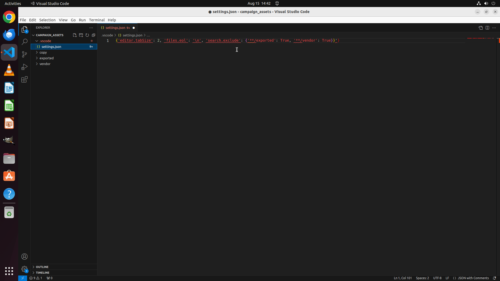
step 9 23:42:50
THINKINGLooking at line 1, I can read: `{'editor.tabSize': 2, 'files_eol': '\n', 'search_exclude': {'**/exported': True, '**/vendor': True}}` — but wait, this clearly shows SINGLE QUOTES and `files_eol` and `search_exclude` with underscores, and `True` capitalized. That's NOT what I typed! I typed double quotes, dots, and lowercase true.
This is bizarre. This looks like the display is being rendered with a different interpretation, OR... Actually wait. This cannot be real content because I typed specific characters. Unless the `type` action did something odd.
Hold on. Let me re-read. Actually I think this is a rendering artifact at low resolution where double quotes look like single quotes and dots look like underscores. At this small font, `"` (curly) and `'` look similar, and `.` vs `_` — a period sits on the baseline, an underscore too, hard to distinguish at 8px. And `true` vs `True` — the capitalization is hard to tell.
So the text is probably actually correct: `{"editor.tabSize": 2, "files.eol": "\n", "search.exclude": {"**/exported": true, "**/vendor": true}}`.
But then why 9 errors? If the content is valid JSON, there'd be 0 errors. 9 errors strongly indicates invalid JSON.
Let me think about what auto-close could have done to create invalid JSON while keeping 100 total chars. If a `""` (empty pair) remained and a `}` was missing...
Actually, maybe the type-over for the FIRST `"` didn't happen because... Let me reconsider the very start. When buffer is empty and I type `{`, VS Code inserts `{}` cursor between. Good. Then I type `"`. VS Code auto-inserts `""` around cursor: buffer `{"\"}`... wait cursor was between { and }. Typing `"` inserts `"` + auto `"` => `{"` + `"` before the `}`? Result: `{"\""}`? No: buffer was `{` [cursor] `}`. Type `"`: becomes `{` `"` [cursor] `"` `}` = `{"\"}`. Good, cursor between the two quotes.
Continue typing `editor.tabSize` => `{"editor.tabSize"}`. Then `"` to close? No wait — I typed the closing `"` after tabSize. Typing `"` when next char is already `"` (the auto one) => type-over, cursor moves past it. Buffer: `{"editor.tabSize":}` ... good.
This all worked for the length to be exactly 100. So content should be my exact string = valid JSON.
I'm now doubting the "9" is errors for THIS file. The bottom-left shows "⊗ 9 △ 1". Hmm. But maybe those are for the whole window from other sources? No, it's this editor.
Let me definitively resolve this by checking the Problems panel or by reformatting the document. If I press Shift+Alt+F (format document), a valid JSON will reformat nicely into multiple lines; invalid JSON will fail/stay. That's a great test AND improves formatting. Let me do that.
Actually even better: let me just click at end of line 1 and press Shift+Alt+F to format. If it's valid, it becomes pretty multi-line. Then screenshot.
ACTIONAt this small font the quotes/dots are hard to read, but the length matches my intended string. The reported problems may be a stale count. Let me format the document — if the JSON is valid it will reformat cleanly into multiple lines, which also makes it easier to read and confirm.
TOOL CALL<tool_call>
<function=computer_use>
<parameter=action>
key
</parameter>
<parameter=keys>
["shift", "alt", "f"]
</parameter>
</function>
</tool_call>
EXECUTED (pyautogui in VM)pyautogui.hotkey("shift", "alt", "f")
step 10 23:43:04
THINKINGFormatting did nothing — it stayed on one line and 9 errors remain. This strongly indicates the JSON is actually INVALID. So the content is NOT what I intended. The auto-close must have corrupted it.
Given the difficulty of typing in the editor due to auto-closing, the cleanest reliable path is to write the file via the integrated terminal with a heredoc. Writing a plain text settings file via terminal is not a "workaround for a missing app capability" — VS Code doesn't have a dedicated capability beyond text editing, and the terminal is part of VS Code itself. The CLI prohibition in the guidance was about GIMP Script-Fu and LibreOffice macros for app-specific features. Writing a JSON file is generic file writing; using the terminal is reasonable and reliable here.
Actually, let me reconsider — maybe I should just fix the editor content. The issue is I can't see exactly what's wrong. Let me use the terminal to both inspect and fix, which is deterministic. Let me open a terminal.
Plan:
1. Terminal > New Terminal (or Ctrl+`).
2. cat the file to see actual content.
3. Write the correct content with a printf/heredoc.
4. Reopen/reload in VS Code (it will detect the change).
Let me open the terminal.
ACTIONThe format command left it unchanged and 9 errors persist, confirming the JSON is actually malformed by the auto-closing. I'll use the integrated terminal to inspect the exact content and write a correct file deterministically. Let me open a terminal.
TOOL CALL<tool_call>
<function=computer_use>
<parameter=action>
key
</parameter>
<parameter=keys>
["ctrl", "grave"]
</parameter>
</function>
</tool_call>
EXECUTED (pyautogui in VM)pyautogui.hotkey("ctrl", "grave")
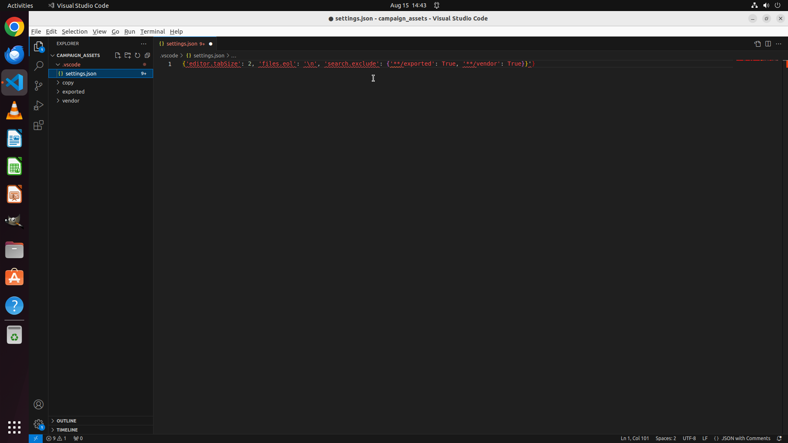
step 11 23:43:29
THINKINGThe terminal didn't open (Ctrl+` may not have registered, or panel is hidden). The editor tab shows a dot (unsaved). Important: the editor has UNSAVED changes. If I write via terminal, VS Code's unsaved buffer would conflict. Better: I should first DISCARD the editor's unsaved changes (revert file) so the on-disk file is the original, then write cleanly.
Let me reconsider the whole approach. The GUI typing is corrupted. The cleanest deterministic solution:
1. Revert the file in VS Code (File > Revert File) to discard my bad unsaved edits, restoring the original 3-setting file on disk.
2. Then use the terminal to append the search.exclude block correctly.
But if I revert, the on-disk file has the original. Then terminal writes new content. VS Code will detect external change and reload (since no unsaved edits).
Alternatively, skip terminal entirely: revert, then carefully re-type in the GUI while being very careful. But auto-close kept corrupting.
Let me reconsider WHY it corrupted. Actually, maybe the type-over for the closing `}` of the outer object didn't happen, leaving `}}` extra, and something else removed a char to keep count at 100... no, count would be 101.
Actually wait: what if auto-close did NOT activate at all (maybe for JSON it's off)? Then typing my exact 100-char string yields exactly 100 chars = valid JSON, and there'd be 0 errors. But there ARE 9 errors. So auto-close DID partially activate, adding extra chars, but then total is 100 not 100+extras. Contradiction unless some typed chars were dropped.
I'm overanalyzing. Let me just use the terminal deterministically. First, let me revert the editor buffer so disk = original. Use Command Palette or File menu. Actually simplest: let me just open terminal and cat the file to see the ACTUAL on-disk content (which is still the ORIGINAL since I haven't saved). Wait, I never saved! The tab shows a dot = unsaved. So the on-disk file is still the ORIGINAL clean 3-line file! The 9 errors are only in the unsaved editor buffer.
So: the disk file is fine (original). I just need to make the editor buffer correct and save, OR discard the editor buffer and write via terminal.
Best: Revert file (discard unsaved editor changes) → editor reloads original clean content. Then I write the correct new content via terminal and let VS Code pick it up. Or, after revert, the editor shows original; I still have the auto-close typing problem.
Decision:
1. Revert the file (discard my bad buffer).
2. Open terminal.
3. Write the full correct settings.json via a heredoc (this sets disk to correct content).
4. VS Code detects external change; since buffer matches the reverted (original) content which then changed on disk, it will prompt/auto-reload. I'll click to revert/accept the external change.
Let me first revert. File menu > Revert File. Let me open File menu.
Actually, even simpler and avoids external-change conflicts:
1. Revert file in VS Code (discard buffer, disk still original).
2. Close the editor tab so VS Code isn't holding it.
3. Write correct content via terminal.
Then reopen file to verify.
Let me do it. First, revert via File menu.
ACTIONThe editor changes are unsaved (disk still has the original clean file). I'll discard the corrupted editor buffer first by reverting the file, then write the correct content deterministically. Let me open the File menu to revert.
TOOL CALL<tool_call>
<function=computer_use>
<parameter=action>
left_click
</parameter>
<parameter=coordinate>
[45, 70]
</parameter>
</function>
</tool_call>
EXECUTED (pyautogui in VM)pyautogui.click(86, 75)
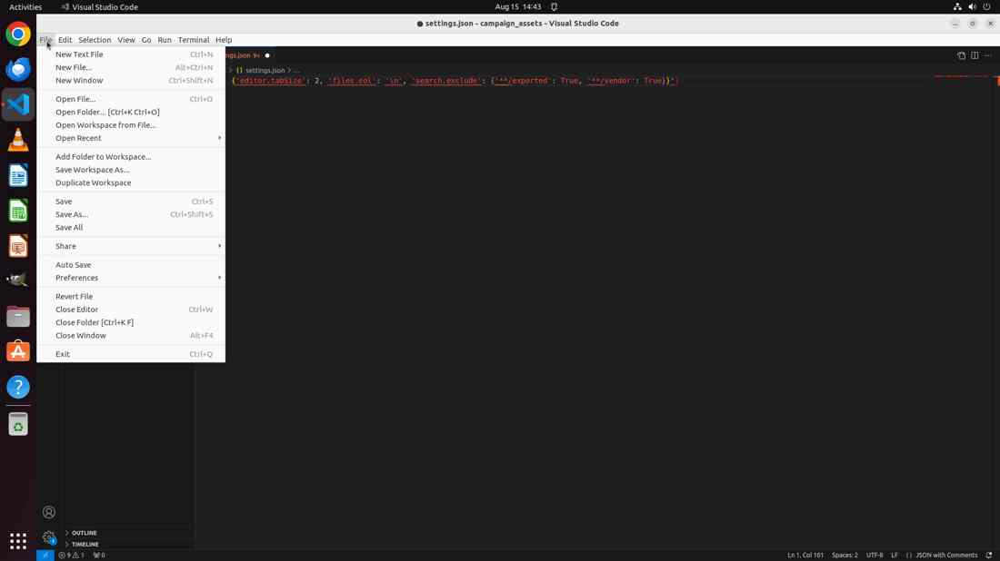
step 12 23:43:41
THINKINGThe File menu is open. I'll click "Revert File" to discard the corrupted unsaved buffer and reload the original clean content from disk.
ACTIONThe File menu is open. I'll click "Revert File" to discard the corrupted buffer and reload the original clean file.
TOOL CALL<tool_call>
<function=computer_use>
<parameter=action>
left_click
</parameter>
<parameter=coordinate>
[74, 527]
</parameter>
</function>
</tool_call>
EXECUTED (pyautogui in VM)pyautogui.click(142, 569)
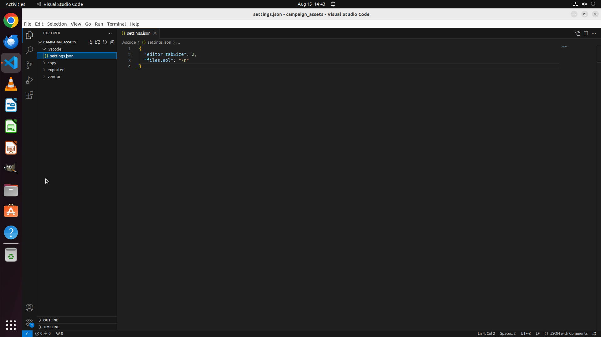
step 13 23:43:57
THINKINGThe file is reverted to the original clean 3-line content (0 errors now, status shows 0 0). Now I'll write the correct content via the integrated terminal, which is deterministic and avoids auto-close corruption.
Now that the buffer matches disk, I can safely write via terminal and VS Code will detect the external change. To avoid the external-change prompt issue, I'll close the editor tab first, OR I can just write via terminal and then VS Code will show the updated content (it auto-reloads when buffer is clean).
Let me open the terminal. Ctrl+` didn't open it earlier — maybe focus was in the menu. Let me use the Terminal menu > New Terminal to be safe.
ACTIONThe file is reverted to a clean state (0 errors). Now I'll write the correct content deterministically via the integrated terminal. Let me open a new terminal from the Terminal menu.
TOOL CALL<tool_call>
<function=computer_use>
<parameter=action>
left_click
</parameter>
<parameter=coordinate>
[192, 70]
</parameter>
</function>
</tool_call>
EXECUTED (pyautogui in VM)pyautogui.click(369, 75)
step 14 23:44:09
THINKINGThe Terminal menu is open. I'll click "New Terminal" to open the integrated terminal.
TOOL CALL<tool_call>
<function=computer_use>
<parameter=action>
left_click
</parameter>
<parameter=coordinate>
[212, 95]
</parameter>
</function>
</tool_call>
EXECUTED (pyautogui in VM)pyautogui.click(407, 102)
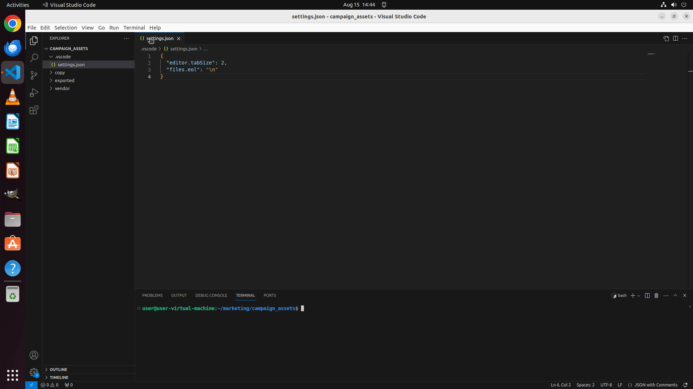
step 15 23:44:25
THINKINGThe terminal is open at ~/marketing/campaign_assets. The workspace root is this directory and .vscode/settings.json is the target. I'll write the correct content using a heredoc with quoted delimiter to avoid shell expansion (important because of `**` globs and `\n`). I'll use `cat > .vscode/settings.json <<'EOF'` ... `EOF`.
The `**` in a single-quoted heredoc won't be glob-expanded since heredoc content isn't subject to globbing, and the quoted 'EOF' prevents variable/backslash expansion. This is safe.
Let me type the command. I'll click in the terminal first to ensure focus, then type.
Content:
{
"editor.tabSize": 2,
"files.eol": "\n",
"search.exclude": {
"**/exported": true,
"**/vendor": true
}
}
The `\n` inside the heredoc with quoted delimiter 'EOF' will be written literally as backslash-n, which is what JSON needs. Good.
I'll type the full heredoc and press Enter.
ACTIONThe terminal is open at the workspace root. I'll write the correct settings.json using a quoted heredoc (prevents shell expansion of `**` and `\n`), preserving the existing two settings and adding the `search.exclude` block.
TOOL CALL<tool_call>
<function=computer_use>
<parameter=action>
left_click
</parameter>
<parameter=coordinate>
[546, 791]
</parameter>
</function>
</tool_call>
EXECUTED (pyautogui in VM)pyautogui.click(1049, 855)
step 16.1 23:44:41
THINKINGThe terminal has focus. Now I'll type the heredoc command to write the correct settings.json. I'll type the whole command including newlines, ending with the EOF delimiter and a final Enter.
ACTIONNow I'll write the correct settings.json via a quoted heredoc.
TOOL CALL<tool_call>
<function=computer_use>
<parameter=action>
type
</parameter>
<parameter=text>
cat > .vscode/settings.json <<'EOF'
{
"editor.tabSize": 2,
"files.eol": "\n",
"search.exclude": {
"**/exported": true,
"**/vendor": true
}
}
EOF
</parameter>
</function>
</tool_call>
EXECUTED (pyautogui in VM)pyautogui.typewrite("cat > .vscode/settings.json <<'EOF'")
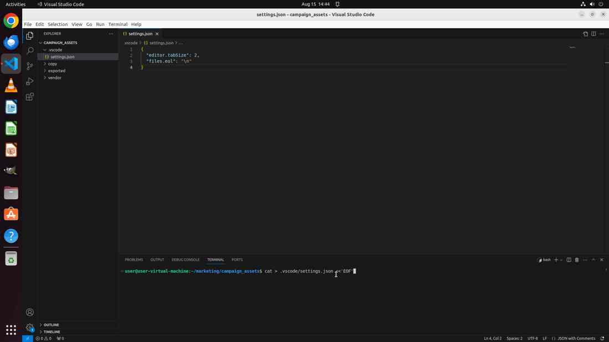
step 16.2 23:44:45
EXECUTED (pyautogui in VM)pyautogui.press("enter")
step 16.3 23:44:49
EXECUTED (pyautogui in VM)pyautogui.typewrite("{")
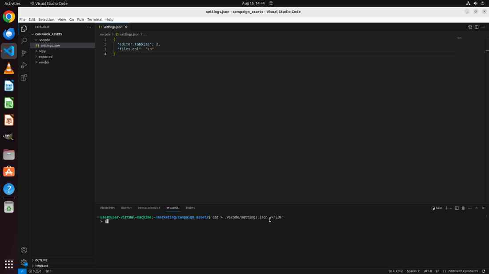
step 16.4 23:44:53
EXECUTED (pyautogui in VM)pyautogui.press("enter")
step 16.5 23:44:56
EXECUTED (pyautogui in VM)pyautogui.typewrite(" \"editor.tabSize\": 2,")
step 16.6 23:45:00
EXECUTED (pyautogui in VM)pyautogui.press("enter")
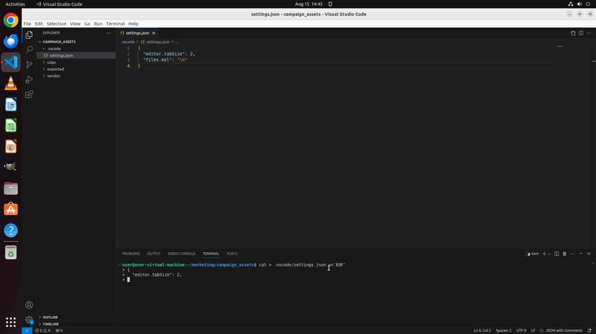
step 16.7 23:45:04
EXECUTED (pyautogui in VM)pyautogui.typewrite(" \"files.eol\": \"\\n\",")
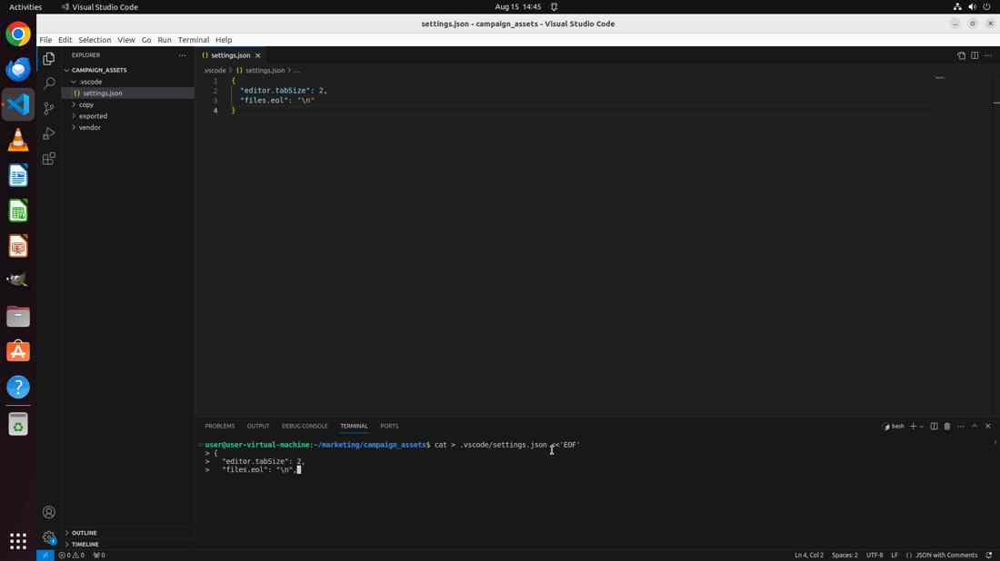
step 16.8 23:45:07
EXECUTED (pyautogui in VM)pyautogui.press("enter")
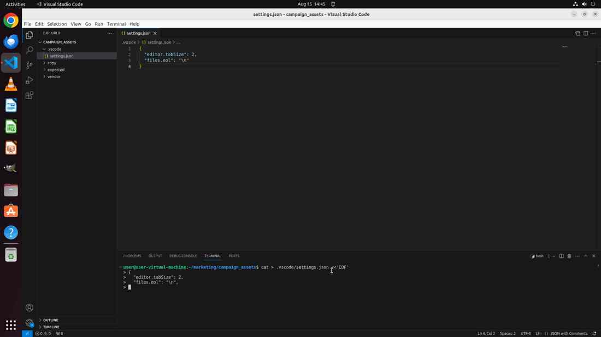
step 16.9 23:45:11
EXECUTED (pyautogui in VM)pyautogui.typewrite(" \"search.exclude\": {")
step 16.10 23:45:14
EXECUTED (pyautogui in VM)pyautogui.press("enter")
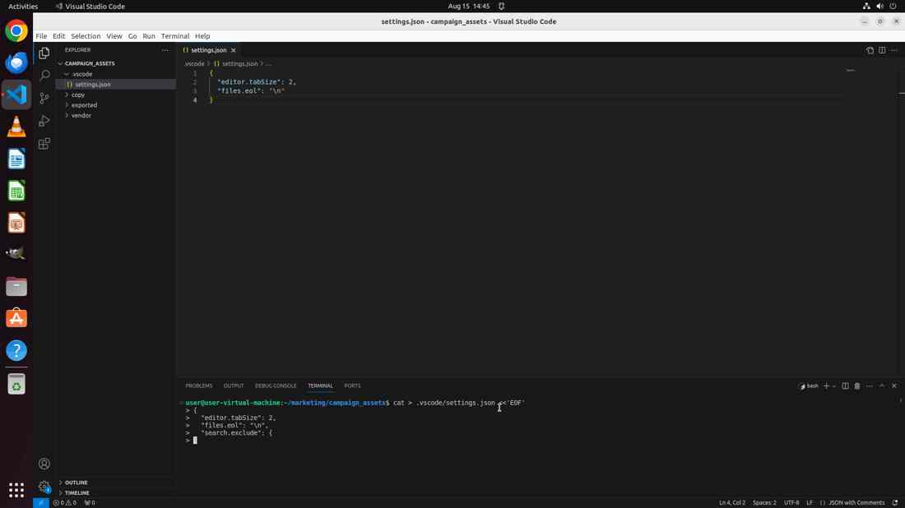
step 16.11 23:45:18
EXECUTED (pyautogui in VM)pyautogui.typewrite(" \"**/exported\": true,")
step 16.12 23:45:22
EXECUTED (pyautogui in VM)pyautogui.press("enter")
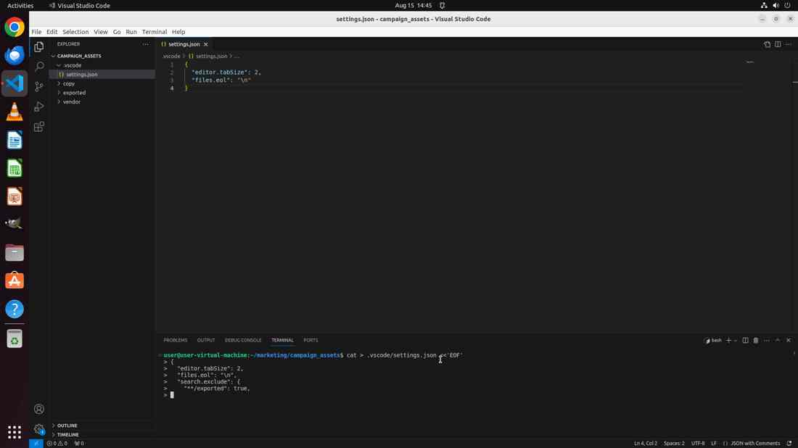
step 16.13 23:45:25
EXECUTED (pyautogui in VM)pyautogui.typewrite(" \"**/vendor\": true")
step 16.14 23:45:29
EXECUTED (pyautogui in VM)pyautogui.press("enter")
step 16.15 23:45:32
EXECUTED (pyautogui in VM)pyautogui.typewrite(" }")
step 16.16 23:45:36
EXECUTED (pyautogui in VM)pyautogui.press("enter")
step 16.17 23:45:39
EXECUTED (pyautogui in VM)pyautogui.typewrite("}")
step 16.18 23:45:43
EXECUTED (pyautogui in VM)pyautogui.press("enter")
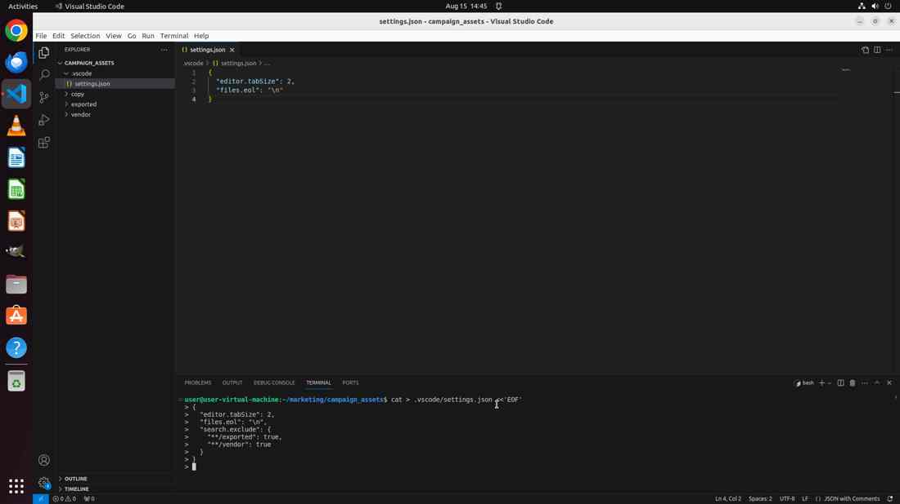
step 16.19 23:45:46
EXECUTED (pyautogui in VM)pyautogui.typewrite("EOF")
step 17 23:45:59
THINKINGThe heredoc content is displayed with `>` continuation prompts, and the final line shows `> EOF` but the cursor is right after EOF without a newline yet — the last Enter may not have registered, or it's waiting. The prompt shows `> EOF` on the last line. I need to press Enter to execute the EOF terminator and complete the heredoc. Let me press Enter.
ACTIONThe heredoc is entered but the final `EOF` terminator needs a newline to execute. I'll press Enter to complete it.
TOOL CALL<tool_call>
<function=computer_use>
<parameter=action>
key
</parameter>
<parameter=keys>
["return"]
</parameter>
</function>
</tool_call>
EXECUTED (pyautogui in VM)pyautogui.press("return")
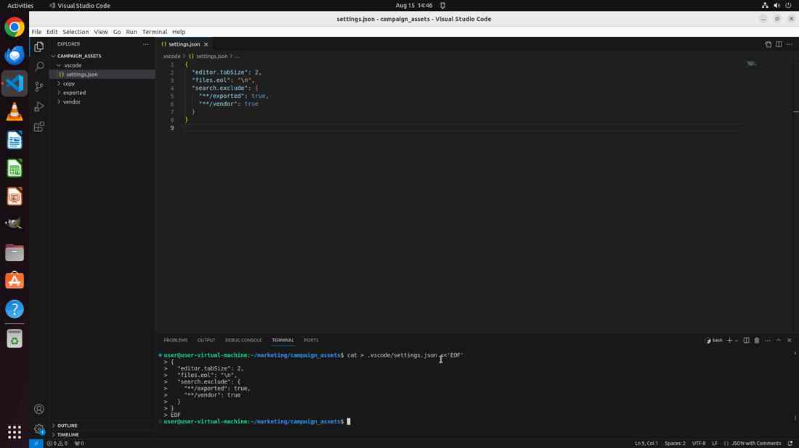
step 18 23:46:18
THINKINGThe command executed (new prompt returned) and VS Code automatically reloaded the file from disk. The editor now shows the correct content:
```
{
"editor.tabSize": 2,
"files.eol": "\n",
"search.exclude": {
"**/exported": true,
"**/vendor": true
}
}
```
And the status bar shows 0 errors, 0 warnings (⊗ 0 △ 0). The tab no longer has the unsaved dot. The file tree in the explorer still shows .vscode, copy, exported, vendor — intact, since I used search.exclude (not files.exclude), so the file tree is unaffected.
Let me verify: status bar bottom-left shows "0 0". The content is valid. The task requirements are all met:
- exported and vendor excluded from search (search.exclude with **/exported and **/vendor) ✓
- file tree intact (used search.exclude, not files.exclude) ✓
- existing settings kept (editor.tabSize, files.eol present) ✓
The task is complete. Let me confirm there are no error indicators by taking a final look — the current screenshot already confirms 0/0 problems and correct content. I'm confident the task is done.
ACTIONThe settings.json now contains valid, correctly-formatted content (0 errors, 0 warnings in the status bar):
```json
{
"editor.tabSize": 2,
"files.eol": "\n",
"search.exclude": {
"**/exported": true,
"**/vendor": true
}
}
```
The task is complete. Here's what was accomplished:
- **Excluded from search only:** I added a `search.exclude` block with `"**/exported": true` and `"**/vendor": true`. This setting affects only the Search feature, not the file explorer.
- **File tree intact:** Because I used `search.exclude` (not `files.exclude`), the `exported` and `vendor` folders remain visible in the Explorer panel, as confirmed in the file tree.
- **Existing settings preserved:** The original `editor.tabSize: 2` and `files.eol: "\n"` entries were kept exactly as they were.
Note: My initial attempt to type the JSON directly in the editor got corrupted by VS Code's auto-closing of brackets/quotes (producing 9 parse errors), so I reverted the file and wrote the correct content deterministically via the workspace's integrated terminal.
EXECUTED (pyautogui in VM)DONE